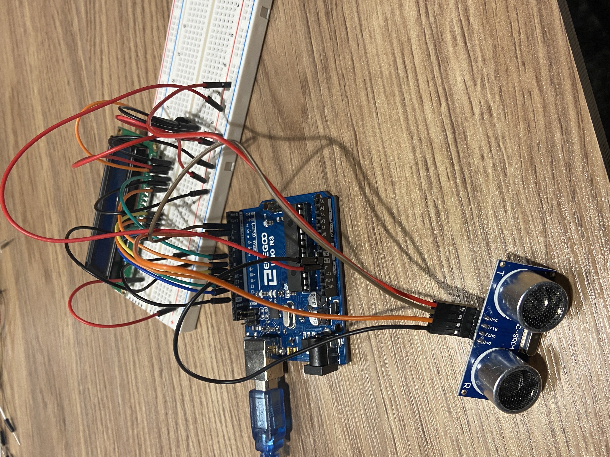
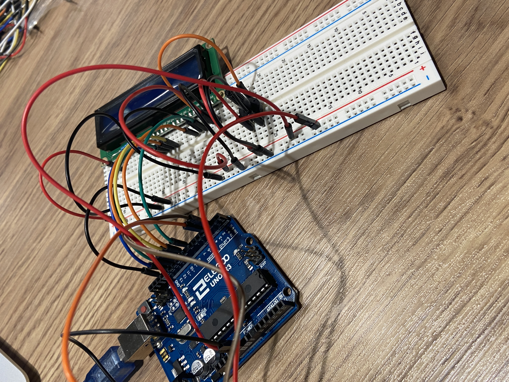
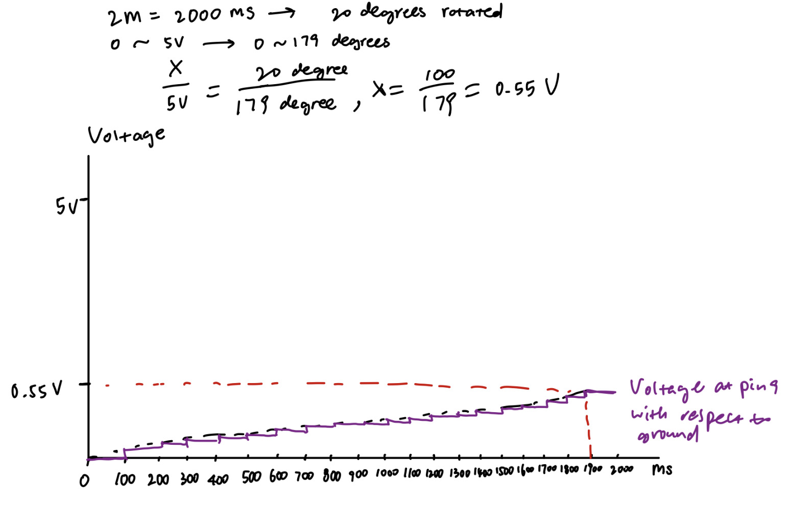

Assignment 4: Libraries
Circuit


The idea is that the LCD shows “Too close!” when an object is getting too close (less than 30 cm) to the ultrasonic sensor. The LCD shows “Great distance” when the closest object has a distance to the sensor that is greater than or equal to 30 cm.
For the circuit of the LCD, I chose to use a resistor and a potentiometer based on the documentation of Arduino LCD: https://docs.arduino.cc/learn/electronics/lcd-displays/. I used a resistor to restrict the current flowing through the circuit, and I chose to use a 220 ohm one because the documentation of LCD suggests using a 220 ohm resistor. According to this post (https://www.electronicsforu.com/technology-trends/learn-electronics/16x2-lcd-pinout-diagram), a potentiometer should be included to be able to adjust the “contrast between the text and the background on the LCD screen”.

The ultrasonic sensor reads the distance from the sensor to the closest object detected by the sensor.
The distance is printed to the Serial Monitor.
If this distance is less than 30 cm, than the LCD screen displays “Too close!”.
If the distance is greater than or equal to 30 cm, than the LCD screen displays “Great distance”.
Code
I found the library and example code for the ultrasonic sensor called “SE04.h” from the ELEGOO website: https://www.elegoo.com/blogs/arduino-projects/elegoo-uno-project-super-starter-kit-tutorial?_pos=12&_sid=6098200f4&_ss=r.
I found the documentation for the LiquidCrystal library and example code from this website: https://www.arduino.cc/reference/en/libraries/liquidcrystal/
// I found the library and example code for the ultrasonic sensor called “SE04.h” from the ELEGOO website: https://www.elegoo.com/blogs/arduino-projects/elegoo-uno-project-super-starter-kit-tutorial?_pos=12&_sid=6098200f4&_ss=r
// I found the documentation for the LiquidCrystal library and example code from this website: https://www.arduino.cc/reference/en/libraries/liquidcrystal/
#include "SR04.h" // include the ultrasonic sensor library
#define TRIG_PIN 2 // set pin 2 to trigger
#define ECHO_PIN 3 // set pin 3 to echo
SR04 sr04 = SR04(ECHO_PIN,TRIG_PIN); // create an sr04 object for ultrasonic sensor
int distance; // create int variable distance
#include // include the lcd library
LiquidCrystal lcd(7,8,9,10,11,12); // create a variable of type LiquidCrystal, rs is connected to pin 7, enable is connected to pin 8, d4 is connected to pin 9, d5 is connected to pin 10, d6 is connected to pin 11, d7 is connected to pin 12
void setup() { // setup the serial monitor and LCD screen
Serial.begin(9600); // allows to communicate with the serial monitor
lcd.begin(16,2); // initialize the LCD to be able to display 2 lines and 16 characters on each line
}
void loop() { // the LCD screen shows "Too close!" if the closest object detected is within 30 cm of distance. Otherwise, the LCD shows "Great distance"
distance = sr04.Distance(); // measure distance from the ultrasonic sensor to the closest object that can be detected
Serial.print(distance); // print variable distance to serial monitor
Serial.println("cm"); // print "cm" to serial monitor and go to next line
delay(50); // wait for 50 ms
if (distance < 30) { // if int distance is less than 30 cm
lcd.clear(); // clear the LCD screen
lcd.print("Too close!"); // print "Too close!" to the LCD screen
delay(500); // wait for 500 ms
} else { // if int distance is greater than or equal to 30 cm
lcd.clear(); // clear the LCD screen
lcd.print("Great distance"); // print "Great distance" to the LCD screen
delay(500); // wait for 500 ms
}
}
Addtional Questions
Question 1:
For the code given in the question, the servo motor starts at 0 degree, wait for 100 ms, and then as int variable i increments by 1, the servo motor turns to the position where its degree corresponds to i, until i = 179.
Assuming that the range of voltage 0–5 V is mapped to 0–179 degrees, and turning on for 2 seconds (or 2000 ms) rotates for 20 degrees, then the voltage at 20 degree is 0.55 V (see calculation in picture).

Question 2:
I would first calculate the mean and standard deviation of the data set, and specify that a data point is an outlier due to measurement error when its value is more than 2.5 standard deviations above or below the mean.
I chose to use 2.5 standard deviation because it’s common practice from what I’ve learned in statistics, and it could be changed to values other than 2.5 depending on if I want to filter out more data or less data.
Question 3:
For noisy input, I would not trust a single read from the device.
Instead, I would record 10 values and take their average to smooth the data.